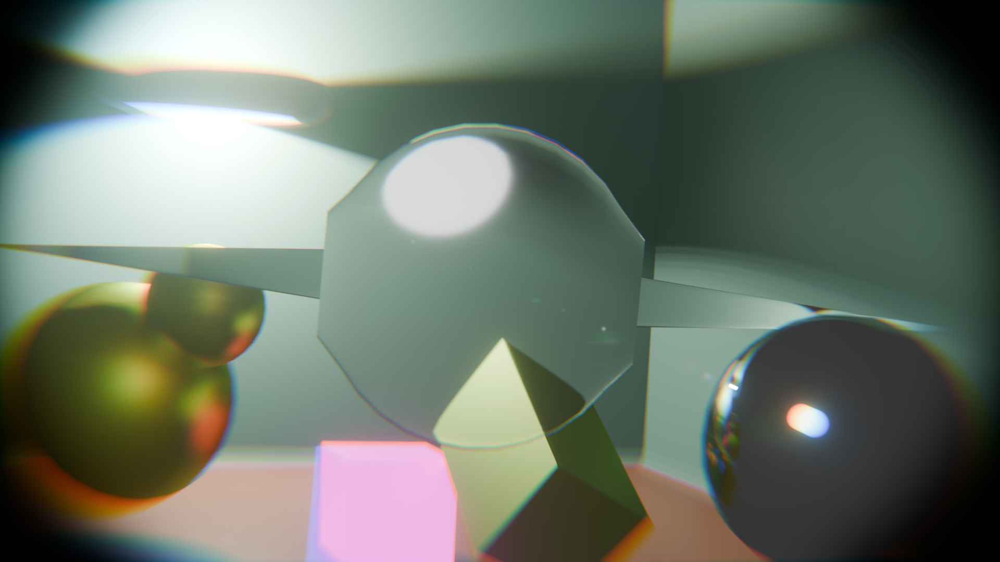
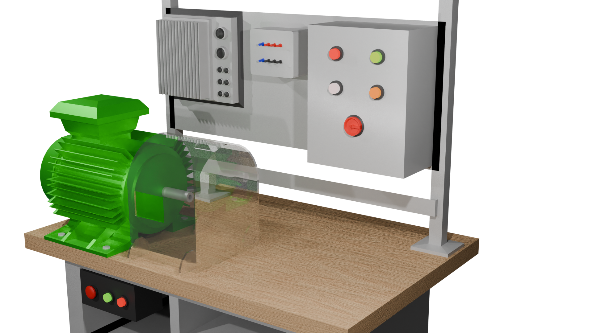
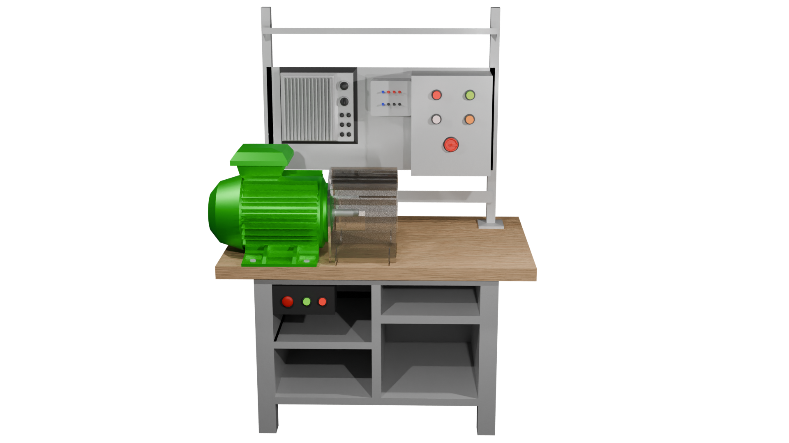

À propos des projets 3D
Réalisations 3D
J’ai travaillé la modélisation, les matériaux et l’éclairage afin de donner du volume, de la profondeur et du réalisme aux objets. J’ai ensuite animé la caméra pour guider progressivement le regard du spectateur à travers l’univers et mettre en valeur les différents éléments de la scène.
À travers la 3D, j’explore la création d’univers visuels immersifs en jouant avec les formes, les matières, la lumière, les couleurs et le mouvement. Je conçois des environnements, des objets et des personnages originaux, puis je leur donne vie grâce à l’animation.
Mon travail consiste à construire des ambiances expressives et cohérentes, capables de transmettre une émotion, une atmosphère ou une identité visuelle forte. Chaque projet est pensé comme un univers à part entière, où les détails graphiques, les jeux de lumière et les mouvements de caméra participent à la narration visuelle.
Personnages : création de personnages originaux et stylisés, adaptés à l’univers du projet.
Modélisation : construction des formes, des objets et des éléments de décor en 3D.
Blocking : mise en place des volumes, des proportions et de la composition générale de la scène.
Sculpting : travail des détails, des reliefs et des formes organiques afin de rendre les éléments plus réalistes ou expressifs.
Rigging : création des structures d’animation permettant aux personnages de bouger de manière fluide et naturelle.
Texturing : application des couleurs, matières et détails visuels afin de donner une identité aux surfaces et aux objets.
2022–2026
Direction artistique
Modélisation 3D
Animation 3D
Création d’univers visuels
Éclairage et rendu
Blender
Les projets en images

